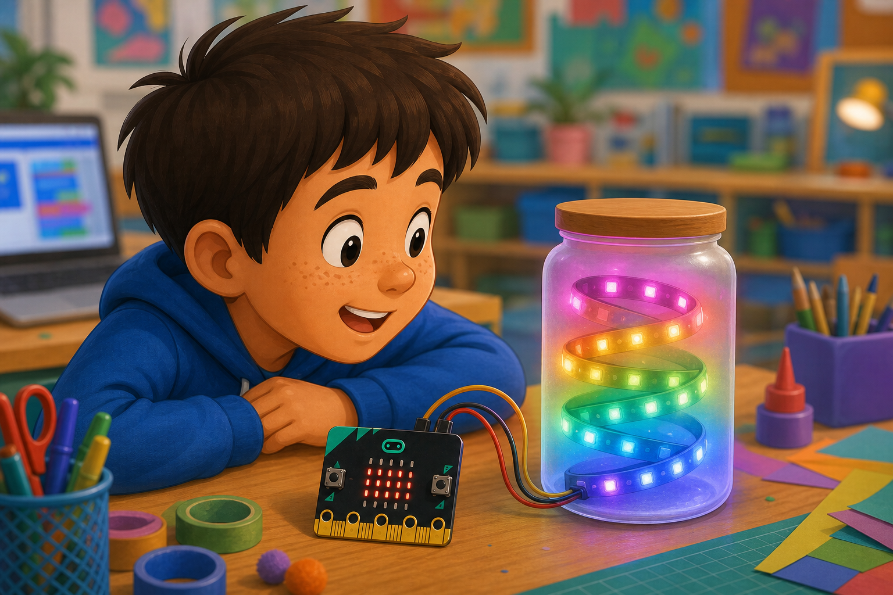
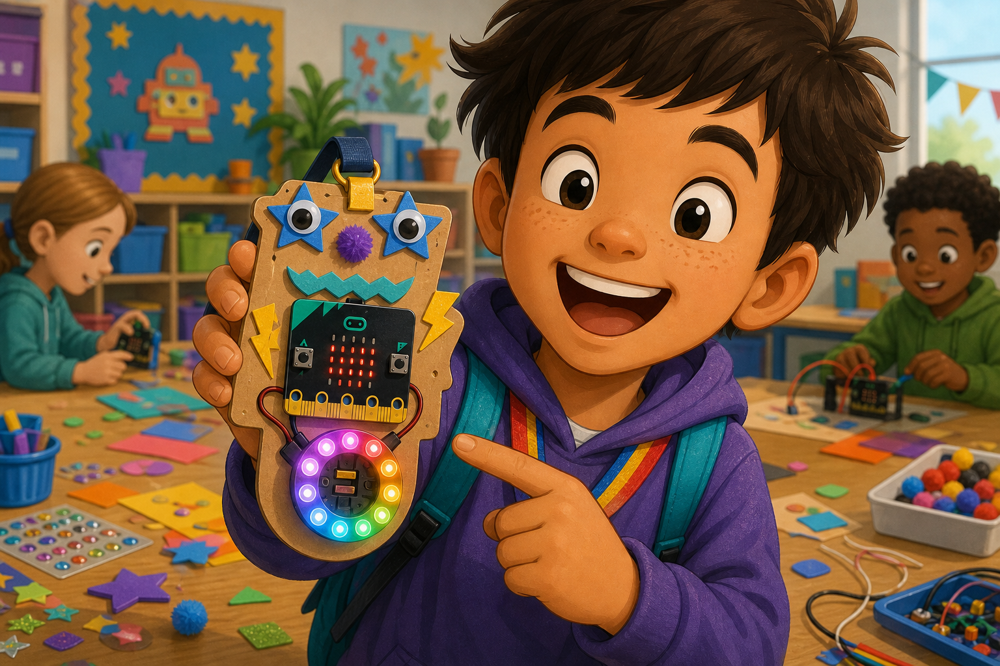

Rainbow light
DetectButton A is pressed
→
DecideNext colour pattern
→
DoUpdate the LEDs
NeoPixels are colourful LEDs that your micro:bit can control one at a time.
A strip or ring uses one data pin, plus power and ground.
Use them for status lights, glowing signs, rainbow effects, or wearable sparkle.


from microbit import *
import neopixel
strip = neopixel.NeoPixel(pin0, 8)
strip[0] = (255, 0, 0)
strip[1] = (0, 255, 0)
strip[2] = (0, 0, 255)
strip.show()let strip = neopixel.create(DigitalPin.P0, 8, NeoPixelMode.RGB)
strip.setPixelColor(0, neopixel.colors(NeoPixelColors.Red))
strip.setPixelColor(1, neopixel.colors(NeoPixelColors.Green))
strip.setPixelColor(2, neopixel.colors(NeoPixelColors.Blue))
strip.show()GND.